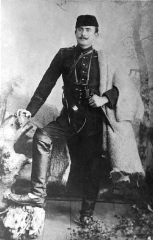

11 Teşrinievvel (28 Eylül) günü Üçüncü Avcı Taburu’yla uzun bir takibe çıktık. Enver Bey müfrezeye kumanda ediyordu. Yüzbaşı Niyazi[26] ve Süleyman ve sınıf arkadaşlarım Tayyar[27] ile Tevfik ve mıntıkadan Mümtaz Kolağası Servet beyler beraberdi. Bütün bu arkadaşlarla daha ilk günden beri her şeyi açık konuşur ve görüşürdük.[28] Takiplere ait hatıralarım Hayatım eserinde olduğundan burada kısaca kaydedeyim ki, harekâtımızın on üçüncü günü Kaymakçalan Dağı’nın şimalinde orman içinde bir Rum çetesiyle müsademe ettik. Ve on bir kişilik çeteyi yok ettik. Bizden de bir şehit, yedi hafif yaralı vardı. Garip bir tesadüf bugün Ramazan’ın altısı idi. Şehit neferin adı Ramazan’dı ve kendisi de oruçlu idi.

Kâzım Karabekir. Manastır’da, 1906
27 Teşrinievvel’de (14 Rumi) akşam Manastır’a döndük. On yedi gün süren bu takipte birbirimize güvenimiz olan hayli zabitin bir arada olması çok samimi seyahate ve çok vatani meseleleri görüşmeye de yaradı. Hele Enver Bey’le çok dertleştik. İki paralık çete mermilerinin milletimizin güzide evlatlarının başını yemesi ve daha da yemek için hazır bulunması karşısında sarayın cehil ve gafletini ve bu acı hayat hakkında en ufak bir vukuf ve teessürü olmaması karşısında artık zabitlerimiz bizlerden medet umuyorlardı. Ne desek yapacaklar, nereye desek koşacaklardı.